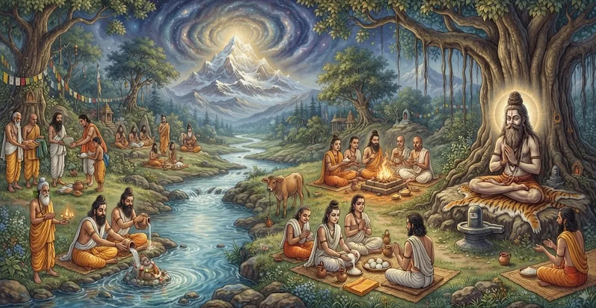

The Eleventh-Day Rites for Ascetics
The twenty-second chapter of the Kailasa Samhita outlines the sacred eleventh-day memorial ceremonies, purification rites, and devotional offerings performed for a departed ascetic.
Sage Suta details the specific protocols required to honor the master, settle subtle spiritual energies, and feed devotees and scholars.
This chapter provides essential guidance for completing the crucial intermediary phase of post-mortem ascetic rituals.
Chapter 22 Highlights
Eleventh-Day Protocol
Explores the significance and schedule of rites performed on the eleventh day.
Devotional Feeding
Outlines the traditions of feeding ascetics, Brahmins, and spiritual seekers.
Purification Rites
Details the cleansing ceremonies that restore household and monastic harmony.
Shiva Worship
Connects the memorial offerings directly with the grace of Lord Shiva.
Disciple Serenity
Guides disciples in maintaining spiritual equanimity during transitional rites.
Transition to Twelfth Day
Prepares the seeker for the concluding rites explored in Chapter 23.
Core Topics in This Chapter
The Significance of the Eleventh Day
Sage Suta explains that the eleventh day following an ascetic's passing is a pivotal juncture where subtle transition settles and communal spiritual practice takes center stage.
It marks the transition from acute mourning or immediate farewell into structured remembrance and divine connection.
Purification and Sanctuary Cleansing
On this day, the ashram or dwelling place of the master undergoes thorough ritual purification using sacred water, cow products, and mantra recitation.
Sanctuary cleansing restores energetic equilibrium and prepares the space for ongoing worship.
Special Shiva Puja and Offerings
Disciples perform elaborate worship of Lord Shiva, offering bilva leaves, sacred ash, and pure water in the name of the departed master.
These offerings invoke divine grace to ensure the soul's permanent abidance in Kailasa.
Charitable Feeding (Anna-Dana)
A core component of the eleventh-day rites is Anna-dana—offering sacred meals to visiting ascetics, Brahmins, and spiritual seekers.
Feeding the holy generates spiritual merit (Punya) that supports the master's upward journey.
Mantra Chanting for Soul Peace
Throughout the day, continuous recitation of the Rudram and Mrityunjaya mantra echoes in the shrine, creating a vibrating shield of spiritual protection.
Sound vibration purifies the subtle atmosphere and uplifts all participants.
Preparation for Twelfth-Day Rites
With the eleventh-day ceremonies successfully concluded, preparations begin for the final concluding rites of the twelfth day.
Disciples ready themselves for the ultimate phase of memorial protocols.
Transition to Chapter 23
Having detailed the eleventh-day rites in Chapter 22, Sage Suta introduces Chapter 23, 'The Twelfth-Day Rites for Yatis'.
Chapter 23 concludes the post-mortem cycle with the final ceremonial observances for advanced renunciates.
Key Teachings of Chapter 22
Structured Remembrance
Shifts grief into organized spiritual devotion and master remembrance.
Sanctuary Purification
Restores energetic purity to the ashram through sacred water and mantra.
Meritorious Feeding
Anna-dana supports the departed soul's ascent through divine grace.
Vedic Resonance
Continuous mantra chanting creates a protective spiritual atmosphere.
Communal Unity
Brings disciples and seekers together in shared reverence and peace.
Twelfth-Day Conclusion
Prepares the seeker for the final concluding rites explored in Chapter 23.
Spiritual Reflection
The eleventh day is a sacred bridge where sorrow dissolves into sacred service. By feeding the holy and chanting the name of Shiva, disciples transform personal loss into a cosmic celebration of eternal life in the divine.
Living the Message of Chapter 22
Observe commemorative milestones with dedication, using charitable acts and sacred feeding to honor the memory of spiritual teachers.
Infuse your daily service with the spirit of compassion and selflessness taught by enlightened masters.
Let sacred mantra resonance keep your mind anchored in peace amidst life's transitions.
Key Spiritual Concepts
The specific eleventh-day memorial protocols and purification rules.
The ritual cleansing and sanctification of the master's dwelling place.
The charitable offering of sacred meals to ascetics and seekers.
Continuous recitation of sacred Rudram chants for soul elevation.
Accumulation of spiritual merit supporting the departed soul's journey.
The subsequent transition toward twelfth-day concluding rites in Chapter 23.
Chapter Summary
Kailasa Samhita Chapter 22 presents The Eleventh-Day Rites for Ascetics. Detailing eleventh-day protocols, sanctuary purification, special Shiva puja, charitable feeding (Anna-dana), mantra chanting, and transitional preparedness, this chapter guides disciples through post-mortem memorial ceremonies. It sets the stage for Chapter 23, 'The Twelfth-Day Rites for Yatis', exploring concluding ritual observances.
Frequently Asked Questions
1. What is the primary subject of Kailasa Samhita Chapter 22?
Chapter 22 outlines the sacred eleventh-day memorial ceremonies, purification rites, and devotional offerings performed for a departed ascetic or Yati.
2. Why is the eleventh day significant in memorial protocols?
The eleventh day marks a crucial milestone in transition where subtle energetic ties settle, and communal purification and spiritual feeding take place.
3. What offerings are prescribed during the eleventh-day ceremony?
Offerings include sacred water oblations, food donations (Anna-dana), and devotional worship dedicated to Lord Shiva for the master's supreme peace.
4. How does Chapter 22 connect with the preceding chapter?
While Chapter 21 covers the immediate passing and Samadhi interment, Chapter 22 continues the sequence by detailing the subsequent eleventh-day observances.
5. What spiritual mindset should disciples maintain during these rites?
Disciples should remain anchored in serene devotion, gratitude, and remembrance of the master's divine teachings rather than worldly sorrow.
6. What is the next chapter for navigation after Chapter 22?
The next chapter for navigation is Chapter 23, titled 'The Twelfth-Day Rites for Yatis'.
“On the eleventh day, sorrow transforms into sacred service. Through charity and mantra, the disciple uplifts the master's legacy into eternal divine light.”
Continue Through Kailasa Samhita
Chapter 22 details The Eleventh-Day Rites for Ascetics. Continue to Chapter 23, The Twelfth-Day Rites for Yatis.